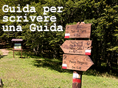

Guida per scrivere una guida 
0.1
Sommario
1. Il progetto
2. Scrivere il testo
3. Gestire modifiche e versioni
4. Condividere i sorgenti
5. Pubblicare la guida
6. Bibliografia
6.1. ReStructuredText
6.2. Git
6.3. GitHub
6.4. Licenze
7. Ringraziamenti
8. Download sorgenti e binari
9. Note legali
Guida per scrivere una guida
Docs
»
6. Bibliografia
6. Bibliografia
¶
6.1. ReStructuredText
¶
Sito di ReStructuredText
Guida di Peter Gulyas per la redazione del manuale di OpenRails con ReStructuredText
Sito di Python
Sito di Sphinx-build
Installare Sphinx-build
Sito di MikTex
Installare MikTex
Conoscere LaTeX
Sito di Read The Docs
6.2. Git
¶
Sito di Git
Pro Git: la guida di riferimento di Git
6.3. GitHub
¶
Sito di GitHub
Le guide di GitHub
6.4. Licenze
¶
Le licenze Creative Commons
GNU Free Documentation License
Licenze in XMP